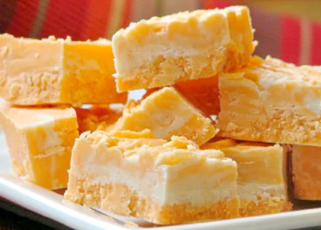

Contents
Orange creamily Sheet Cake

Ingredients
- 1 (15.25 ounce) white or yellow cake mix
- 3 large eggs
- 1 cup orange juice
- 1/3 cup oil
- 1 orange, zested
- 1 (6 ounce) box instant orange jello
- 2 cups boiling water
- 1 (3.4 ounce) box vanilla pudding
1 cup milk
- (8 ounce) tub frozen whipped topping, such as Cool Whip®, thawed
Directions
- Gather all ingredients. Preheat the oven to 350 degrees F (180 degrees C). Spray a 9x13-inch pan with nonstick cooking spray. Set aside.
- Combine cake mix, eggs, orange juice, oil, and orange zest in a bowl and mix until just combined. Pour into the prepared pan.
- Bake in the preheated oven until a toothpick inserted in the center comes out clean, 28 to 35 minutes. Cool for 15 minutes.
- Bake in the preheated oven until a toothpick inserted in the center comes out clean, 28 to 35 minutes. Cool for 15 minutes.
- Using the handle of a wooden spoon, poke holes throughout cake.
- Add orange jello to boiling water and stir until dissolved. Pour jello mixture over cake. Refrigerate until cool, 2 to 3 hours.
- Whisk vanilla pudding mix and milk together until thickened, about 2 minutes. Fold in Cool Whip.
- Spread mixture over cooled cake and refrigerate overnight.
Orange Cream Fudge

Ingredients
- 3 cups white sugar
- ¾ cup butter
- 1 (7 ounce) jar marshmallow creme
- 1 (11 ounce) package white chocolate chips
- 3 teaspoons orange extract
- 12 drops yellow food coloring
- 9 drops red food coloring
- Grease a 9 x 13 inch pan.
- In a medium saucepan over medium heat, combine sugar, cream and butter. Heat to soft ball stage, 234 degrees F (112 degrees C). Remove from heat and stir in marshmallow creme and white chocolate chips; mix well until the chips melt. Reserve 1 cup of mixture and set aside.
- To the remaining mixture add orange flavoring, yellow and red food coloring. Stir well and pour into prepared pan. Pour reserved cream mixture on top. Using a knife, swirl layers for decorative effect.
- Chill for 2 hours, or until firm, and cut into squares.
Home